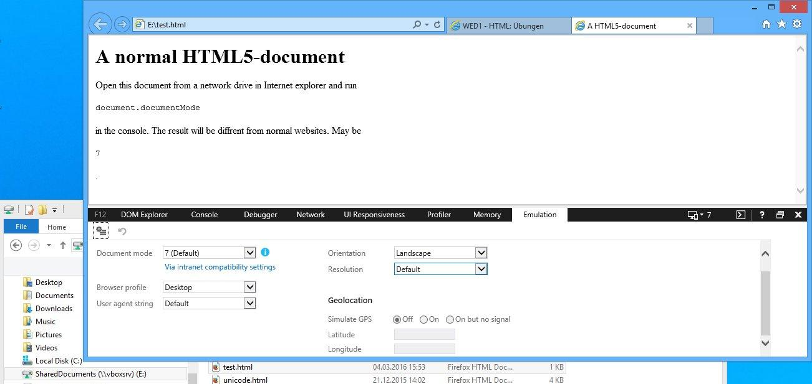
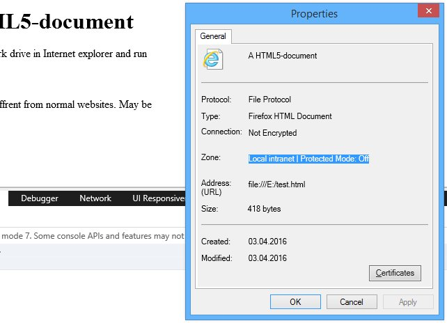
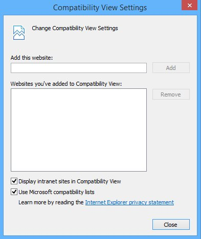

Arbeiten Sie die folgenden Kapitel bezüglich der HTML Doctypes durch:
<!DOCTYPE html>) bei Mozilla basierten Browsern (siehe developer.mozilla.org/en-US/docs/Mozilla_Quirks_Mode_Behavior) speziell interpretiert wird.
Add padding if the very first node in an LI is another UL or OL ...
Internet Explorer beachtet nicht nur den Doctype, sondern auch die Umgebung des auszuführenden Files. So wird bei IE11 der IE7 Standard Mode aktiviert, falls die Seite im Intranet gehostet wird (siehe Kontextmenü → "Properties" und Einstellungen ("Zahnrad") → "Compatibility View settings").
In den Entwicklertools im Tab "Emulation" sehen Sie den aktuellen Document-Mode.
 Mit document.documentMode können sie sich auch auf der
Konsole den aktuellen Document-Mode ausgeben lassen. "7" bedeutet Internet Explorer 7.
Beachten Sie: Mit Dateien vom Skripteserver können Sie das gewünschte Verhalten nicht erzeugen.
In dieser Aufgabe sollen Sie die W3C-Spezifikation lesen lernen und das Content Model verstehen.
Finden sie mit Hilfe des Content Models und der verlinkten W3C Element-Spezifikation heraus, welche Elemente sich ineinander verschachteln lassen.
| Allowed content (content model) |
Allowed context (parent) |
Darf in sich selbst verschachtelt werden | |
|---|---|---|---|
| body | |||
| section | |||
| style | |||
| h3 | |||
| header | |||
| div | |||
| select | |||
| object | |||
| time | |||
| video | |||
| p | |||
| a |
| Allowed content (content model) |
Allowed context (parent) |
Darf in sich selbst verschachtelt werden | |
|---|---|---|---|
| body | Flow | 2. Kind von "html" | x |
| section | Flow | Flow | ✓ |
| style | - | Meta/Flow | x |
| h3 | Phrasing | "hgroup"/Flow | x |
| header | Flow, !"header", !"footer", !"main" | Flow | x |
| div | Flow | Flow | ✓ |
| select | "option", "opt.group" | Phrasing | x |
| object | "param", Flow | Embeded | ✓ |
| time | Phrasing, !"time" | Phrasing | x |
| video | "track", Flow, !video, !audio | Embeded | x |
| p | Phrasing | Flow | x |
| a | Flow, !Interactiv | Interactiv | x |
Beschreibung zum Content-Model:
www.stefan-muenz.de/HTML5-Handbuch/Textstrukturierung/Content-Modelle.
W3C Elementbeschreibungen Übersicht:
www.w3.org/TR/2011/WD-html5-20110525/spec.html#auto-toc-4
Hinweis: WebStorm kennt das Content Model. Sie können zum Überprüfen, ob Sie die Spezifikation richtig gelesen haben, ein einfaches Beispiel in WebStorm erstellen und WebStorm wird Ihnen die Struktur validieren.
Ermitteln Sie mittels caniuse.com, ob die folgenden Tags/Technologien in Firefox (FF), Chrome (GC), Internet Explorer/Edge (IE), Safari (AS) und Android Browser (AB) funktionieren. Beziehen Sie sich dabei jeweils auf die zwei neusten Browserversionen.